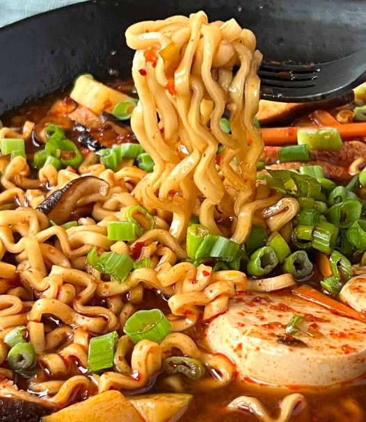

Home
Ramen

Description
This simple ramen recipe transforms an ordinary instant noodle pack into a satisfying and flavorful meal.
With just a few added ingredients like eggs, vegetables, or meat, you can elevate your bowl into something
comforting and delicious. It is perfect for a quick lunch or dinner.
Ingredients
- 1 pack of instant ramen noodles (any flavor or brand)
- 1 pt. to 3/4 of a qt. of water
- 1 egg
- 1 green onion, chopped (scallions)
- Choice of vegetables (mushrooms, lettuce, onions, etc.)
- Choice of protein/meats (chicken, beef, pork, shrimp, tofu, etc.)
Steps
- Boil the water:
- Boil the water using a pot.
- Cook the noodles, vegetables, and protein/meats:
- Add the ramen noodles, vegetables, and protein/meats into the pot.
- Add the flavor packets:
- Add and stir in all the seasoning packets that come with the ramen.
- Let the ramen sit and cook according to package instructions, or for 5 minutes if you are cooking
raw meat.
- Add the egg:
- Prepare the egg how you want (scrambled, hard-boiled, fried, etc). You may need to use a separate
pan for this.
- Add the egg into the pot of ramen.
- Pour contents into bowl and serve:
- Pour the ramen, the soup, and its contents into a bowl.
- Top with chopped green onions (scallions).
- Enjoy your bowl of ramen!